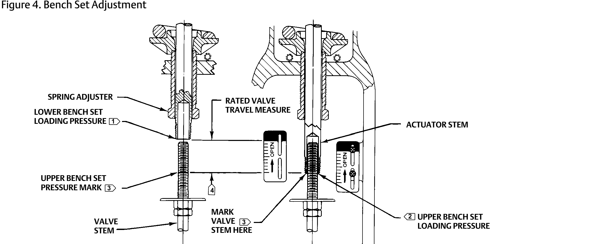

Set the Bench Set — Actuator Off the Valve
- Actuator off the valve, stems unconnected — no packing friction acting.
- Raise loading pressure to the lower bench-set value. Turn the spring adjuster in or out of the yoke until the stem first moves exactly at that pressure.
- Raise to the upper bench-set pressure; the stem strokes fully. Mark the stem at each end of travel.
- Measure between the marks — it must equal the nameplate rated travel. If short or long, re-adjust and repeat.

Fisher 657 Instruction Manual (D100306X012), "Discussion of Bench Set" and Figure 4 "Bench Set Adjustment", cropped to the drawing. The figure's own circled numbers ①–④ are Fisher's note key, not the step numbers. Component Index: bs657-cmp-bench-set-adjustment.